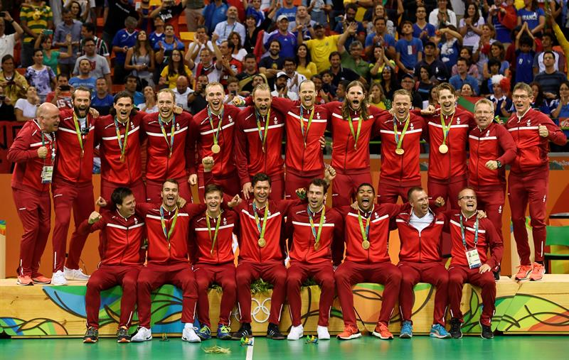

-Esporte
-Esporte
Copenhague é um destino instigante. Apesar de refletir seus mais de oito séculos de história, a cidade não é definida pelo
seu passado, muito pelo contrário: é símbolo de modernidade, inovação urbana e desenvolvimento sustentável.Seu tamanho
relativamente pequeno e seus atrativos centrais convidam o turista a explorar a cidade. A atmosfera descontraída, com
diversos bares e restaurantes, a população jovem e a grande variedade de atividades são um estímulo para desacelerar e
aproveitar cada momento de lazer.A seguir, listei o que fazer em Copenhague e todos os principais atrativos que o turista
deve conhecer em sua primeira visita à capital dinamarquesa. Lembrando que muitos desses locais tem entrada gratuita para os
portadores do Copenhagen Card.Para outras informações práticas e dicas de como organizar sua viagem para Copenhague, confira
esse artigo.
Construído em 1843 como uma combinação de parque de diversão e amplos jardins, o Tivoli é o segundo parque temático mais
antigo do mundo (O primeiro também está na Dinamarca e chama Dyrehaven Bakken).Para cada estação do ano, há uma decoração
e calendário de eventos específicos. Ou seja, cada ida ao parque é uma experiência inédita. Na primavera, são exibidos mares
de arranjos de flores, enquanto o verão é marcado por shows musicais e mesas de restaurantes ao ar livre. No outono, a decoração
de Halloween é imperdível e o inverno é tomado pelas luzes e feiras de Natal, com comidas típicas da data e o tradicional vinho quente
(Gløgg).Neste parque, você não irá encontrar atrativos grandiosos estilo Disney (embora Walt Disney tenha se inspirado no Tivoli para
criar o seu centro de entretenimento), mas sim, um parque old school, com uma montanha russa de 1914, carrossel, pedalinho, teatro e
também outros entretenimentos modernos como uso de óculos para simular realidade virtual para as montanhas russas.Para jantar sem gastar
muito, Paafuglens Bistro traz comidas típicas dinamarquesas, enquanto o luxuoso Nimb oferece alta gastronomia e atendimento personalizado.
Os arredores do parque são ótimos para quem busca se hospedar com praticidade e comodidade em Copenhague. Leia este artigo sobre os
melhores hotéis e hostels selecionados por bairro.
Cartão postal de Copenhague, Nyhavn era originalmente um movimentado porto comercial. Escavado por soldados suecos a partir de 1670,
tinha como propósito permitir o acesso dos barcos mercantes à praça Kongens Nytorv. Hoje, as fachadas coloridas dos edifícios
recentemente restaurados faz desta singular área histórica um dos lugares mais alegres da cidade.Há diversos restaurantes,
cafés e sorveterias na beira do canal e, por isso, é uma ótima parada depois de um dia de passeio ou entre uma atração e outra.
Além dos turistas, muitos locais aproveitam os dias ensolarados pra tomar uma cerveja próximo à àgua e conferir a movimentação
de pessoas que passam diariamente por ali.Atenção aos barcos estacionados às margens do canal: alguns sequer navegam mais e,
por isso, hoje abrigam restaurantes, museus e até teatros.Faça uma parada na sorveteria Rajissimo para provar aquele que é
considerado um dos melhores sorvetes da cidade (valor de 40 à 58dkk).
Concebidos há centenas de anos para facilitar a comercialização e o planejamento da cidade, os canais de Copenhagen hoje são rotas
para os populares passeios de barco. Este passeio, além de mostrar a cidade por uma perspectiva diferente, inclui um guia que narra
a história e os segredos da capital escandinava.O passeio dura uma hora e pode ser feito em qualquer época do ano ou condição climática.
O teto da embarcação funciona como janelas, que podem ser abertas nos dias de sol e fechadas nos dias de chuva.
Obs: Os tours são feitos essencialmente em inglês e dinamarquês, mas há possibilidade de um terceiro idioma, dependendo do guia
disponível no momento. Procure se informar no guichê de informação.
O trajeto passa por pontos importantes como: o Palácio de Christiansborg (prédio do parlamento), a antiga bolsa de
valores (Børsen), Opera House, a estátua da Pequena Sereia (referente ao conto de fada de Hans Christian Andersen),
Palácio de Amalienborg (residência real), entre outros.